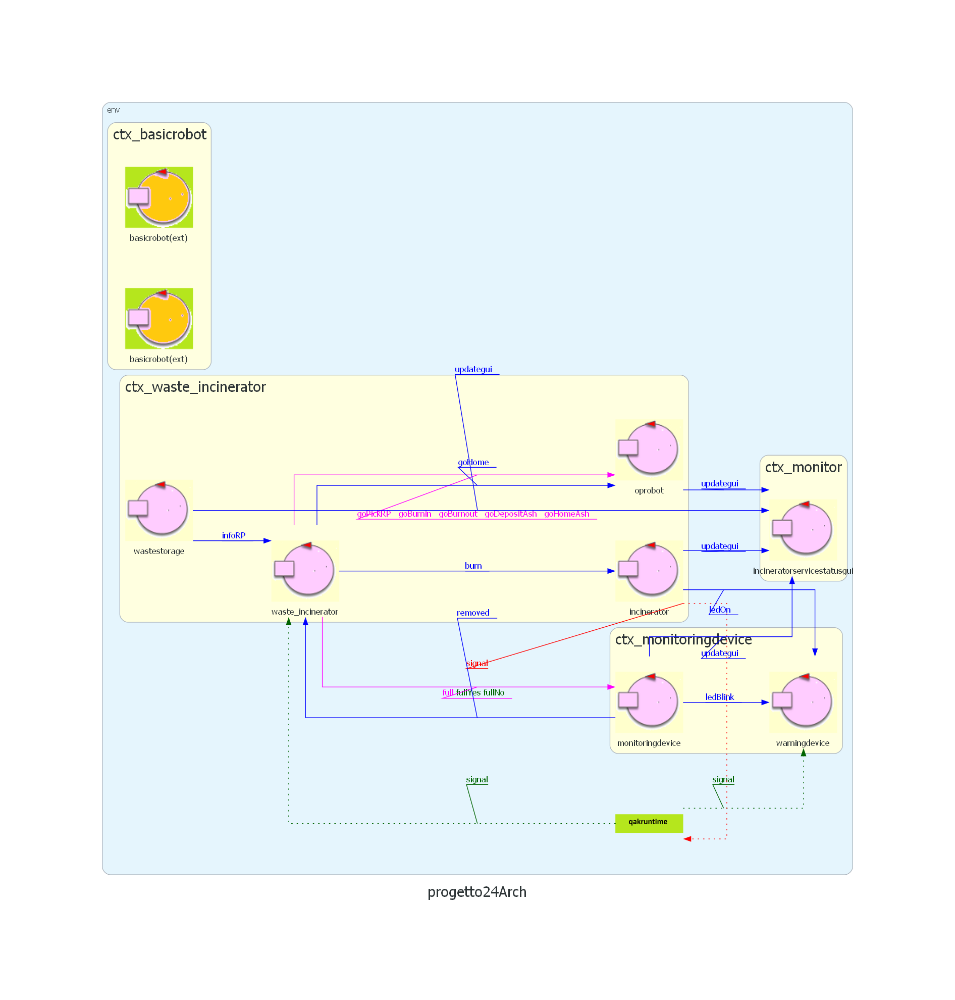

Introduction
Requisiti del Sistema
Analisi dei Requisiti
Descrizione della stanza:
Si fa riferimento ad un sistema con un DDR robot, in una stanza che presenta al suo interno un compnente inceneritore e un ostacolo.
La stanza (service area) e' uno spazio euclideo delimitato da bordi:
- il bordo perimetrale ha lunghezza lu + lr + ls + lb
- la stanza e' rettangolare, quindi ls == lr e lb == lu
- Il DDR robot puo' essere visto come occupante di un area circolare DR=2R dove R e' il raggio dell' area

La service area include:
- L' inceneritore e' un' area che il DDR robot non puo' percorrere individuato da 4 coordinate non specificate dai requisiti. L' inceneritore presenta una porta BURNIN sulla faccia del poliedro parallela a ls, e una porta BURNOUT sulla faccia del poliedro parallela a lb
- Un ostacolo che e' un' area che il DDR robot non puo' percorrere individuato da 4 coordinate
- La porta wastein, localizzata all' estremita' sinistra del bordo lu
- La porta ashout, localizzata all' estremita' destra del bordo lu
- L' area home situata nell angolo superiore sinistro
-
DDR Robot:
- Il software di controllo specificato dal committente e' BasicRobot24
-
BasicRobot24:
- Si occupa di muovere il robot fisico e virtuale
OpRobot
- E' necessario un attore che ne implementa il comportamento
- Riceve una request da
- Sosta in posizione HOME quando non c'e' lavoro
- Quando WasteStorage non e' vuoto, AshStorage non e' pieno e l'inceneritore non sta bruciando:
- Riceve una request da WIS e si sposta alla porta WASTEIN per prelevare RP rifiuti
- Sempre dopo una request da parte di WIS si sposta nella porta di BURNIN e deposita i rifiuti
- Attraverso una dispatch, da parte di WIS, torna nella posizione HOME, mentre l'inceneritore brucia i rifiuti
- Sara' avvisato da WIS che l'inceneritore ha finito di bruciare, quindi si reca alla porta di BURNOUT e preleva le ceneri
- Sempre dopo una request da paret di WIS si dirige all'area di AshStorage e deposita le ceneri
- Torna alla HOME
-
Inceneritore:
- Brucia un rifiuto RP alla volta in tempo BTIME, ricevuto tramite la porta di BURNIN
- Emette un segnale alla fine della bruciatura percepito da OpRobot e WIS
-
ServiceStatusGUI:
- Mostra il numero di RP n WasteStorage
- Indica il livello di capacita' utilizzata in AshStorage
- Stato dell'inceneritore (brucia o meno)
- Posizione attuale e lavoro svolto dall'OpRobot
- Misura il peso totale dei rifiuti presenti nel Waste Storage.
-
MonitoringDevice:
- E' composto da un Led e da un Sonar, utilizzati per comunicare con il WIS lo stato sia dell'inceneritore che del contenitore dell'AshStorage
Componenti:
I componenti necessari inizialmente per la realizzazione del sistema sono:
Architettura Logica del modello

Primo modello di progetto: /log4j.properties
By Michele Armillotta email: michele.armillotta2@studio.unibo.it

By Nicole Giulianelli email: nicole.giulianelli@studio.unibo.it

GIT repo: https://github.com/NicoleGiulianelli2/TemaFinale2024